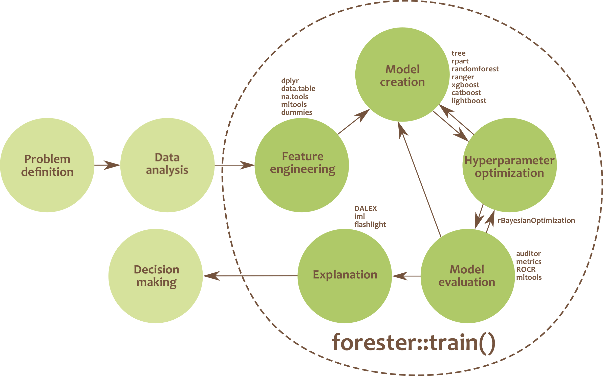

A significant amount of time is spent on building models with high performance. Selecting the appropriate model structures, optimizing hyperparameters and explainability are only part of the process of creating a machine learning-based solution. Despite the wide range of structures considered, tree-based models are champions in competitions or hackathons. So, aren’t tree-based models enough?
They definitely are and that’s why we want to fully automate the machine learning process for them, so everyone will be able to use the computational power of the trees.
From GitHub
install.packages("devtools")
devtools::install_github("ModelOriented/forester")Some of the package dependencies are not present on CRAN, which means that the user has to follow the installation mentioned below. They should be especially helpful for macOS users:
The catboost model is used in the train() function as an additional engine.
devtools::install_url('https://github.com/catboost/catboost/releases/download/v1.1.1/catboost-R-Darwin-1.1.1.tgz', INSTALL_opts = c("--no-multiarch", "--no-test-load", "--no-staged-install"))Alternatively one can do a longer installation, where whole repository will be downloaded.
devtools::install_github('catboost/catboost', subdir = 'catboost/R-package')The ggradar is required for creating radar plot visualization in the report from the report() function.
devtools::install_github('ricardo-bion/ggradar', dependencies = TRUE)The tinytex is required for creating a report from the report() function.
install.packages('tinytex')
tinytex::install_tinytex()💡 full automation of the process of training tree-based models
💡 no demand for ML expertise
💡 powerful tool for making high-quality baseline models for experienced users
The forester package is an AutoML tool in R that wraps up all machine learning processes into a single train() function, which includes:

The forester package is designed for beginners in data science, but also for more experienced users. They get an easy-to-use tool that can be used to prepare high-quality baseline models for comparison with more advanced methods or a set of output parameters for more thorough optimisations.
This package is created inside the MI2.AI (Warsaw University of Technology) as both scientific research and Bachelor thesis by: - Adrianna Grudzień, - Hubert Ruczyński, - Patryk Słowakiewicz.
Project co-ordinator and supervisor: Anna Kozak
Auxiliary supervisor Przemysław Biecek
The previous version of forester was created by: - Hoang Thien Ly - Szymon Szmajdziński